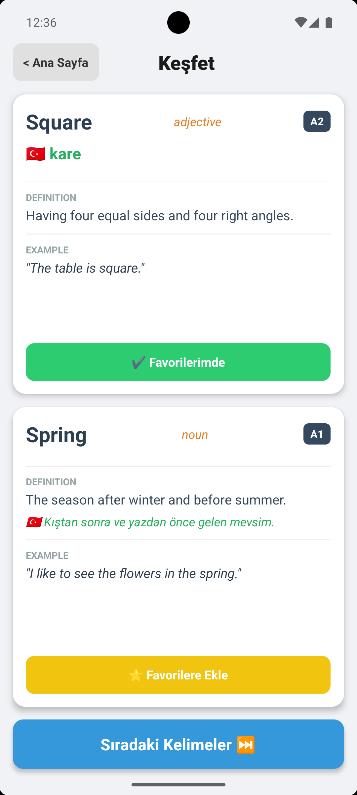
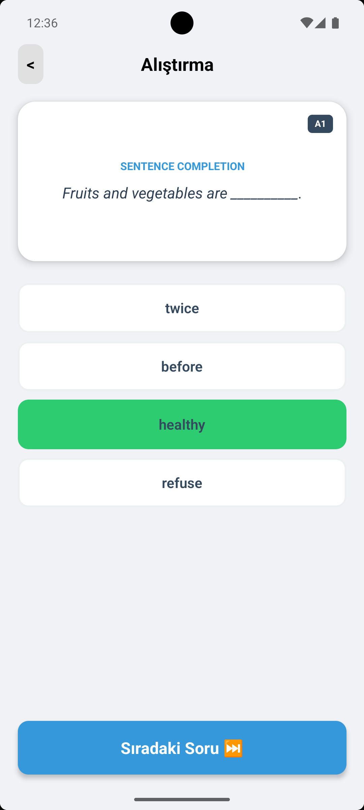
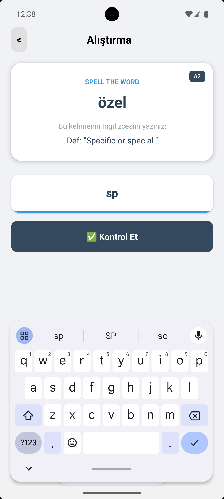
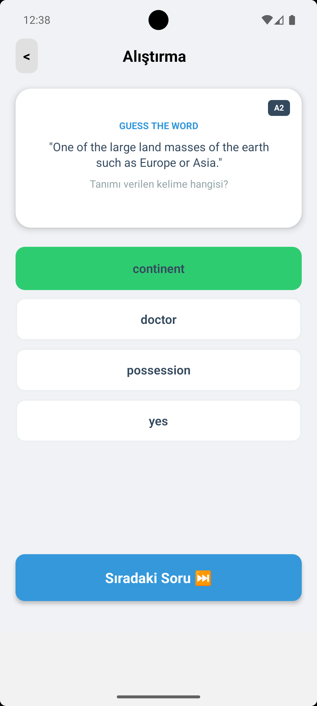

VocaBuilder
React Native
Python
Gemini API





Proje Hakkında
VocaBuilder, Oxford'un belirlediği en sık kullanılan 3000 İngilizce kelimenin hızlı bir şekilde pratik yapılabilmesi ve öğrenilmesi amacıyla geliştirilmiş bir mobil uygulamadır. Kullanıcıların kelime dağarcığını geliştirmeyi hedeflerken, çeşitli soru tipleri ve detaylı tanımlarla kelimelerin kalıcı olarak pekiştirilmesini sağlar.
Anahtar Özellikler
- Bağlamsal öğrenmeyi destekleyen boşluk doldurma egzersizleri.
- Öğrenme durumunu ölçen çoktan seçmeli test soruları.
- Her kelime için özel olarak hazırlanmış örnek cümleler ve İngilizce tanımlar.
- Kullanıcının zorlandığı kelimelere hızlı erişim sağlaması için favorilere ekleme özelliği.
- Yanlış bilinen kelimelerin daha sonra tekrar kontrol edilip çalışılabilmesi için özel "Hatalarım" bölümü.
Geliştirme Süreci ve Teknik Detaylar
- Oxford 3000 kelime listesi ham veri olarak
.txtformatında toplandı. - Python kullanılarak metin verisi Regex (Düzenli İfadeler) ile temizlendi ve uygun veri yapısına getirildi.
- Python üzerinden Gemini API promptları kullanılarak; her kelime için benzersiz ID, İngilizce tanım, zorluk seviyesi ve örnek cümle içeren detaylı JSON veri setleri oluşturuldu.
- Çoklu dil desteği altyapısı kuruldu. Kelimelerin ve tanımların çevirileri için ayrı bir JSON dosyası oluşturuldu ve
idtanımlaması foreign key olarak kullanılarak diller arası veri ilişkisi sağlandı. Bu çeviri işlemi de Python ve Gemini API entegrasyonu ile otomatikleştirildi. - Uygulama arayüzü ve bileşenleri (komponentler) React Native ile geliştirildi. Kod tekrarını önlemek ve projenin ölçeklenebilirliğini artırmak adına kelime kartları, butonlar ve quiz arayüzleri tekrar kullanılabilir (reusable) bileşenler olarak tasarlandı.
- 3000 kelimelik geniş veri setinin ekranda donma veya bellek (RAM) sorunu yaratmadan akıcı bir şekilde listelenebilmesi için React Native'in
FlatListyapısı kullanılarak render optimizasyonu sağlandı. - "Favoriler" ve "Hatalarım" gibi kullanıcıya özgü verilerin hızlı erişilebilir olması ve uygulamanın tamamen çevrimdışı (offline) çalışabilmesi amacıyla lokal depolama (AsyncStorage) entegrasyonu yapıldı.
- Uygulama içi ekran geçişlerinin (Kelimeler, Quiz, Favoriler, Hatalarım) pürüzsüz ve hızlı olması için React Navigation kütüphanesi yapılandırılarak kullanıcı deneyimi (UX) iyileştirildi.
- Kullanıcının quiz sırasında veya kelime öğrenirken anlık geri bildirim (doğru/yanlış durumları) alabilmesi için React Hooks (useState, useEffect) ile durum yönetimi (state management) efektif bir biçimde kurgulandı.